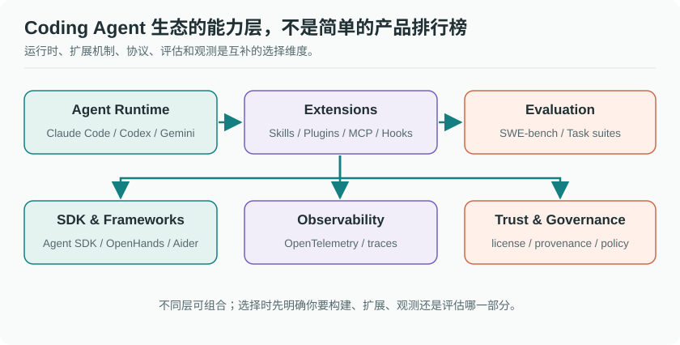
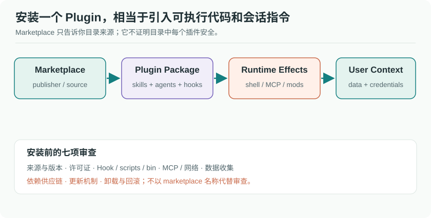

Coding Agent Ecosystem：SDK、Skills、MCP、开源项目与供应链审查
从官方 SDK、Skills 与插件市场到 MCP 协议、开源 Coding Agent 和评估资源，建立可持续更新、可验证的生态选型方法。
生态调研的第一条原则：官方文档、公开 SDK 与社区猜测要分开
Coding Agent 的生态已经不只是一个聊天界面：它包括产品运行时、Agent SDK、Skills、插件市场、MCP 协议、工具服务器、可观测性和评估数据集。读者真正需要的是知道每类资源解决什么问题，以及在引入它之前要验证哪些风险。
旧稿将“2025 年 Claude Code 源码泄漏”描述为社区生态的起点，并把对安装包的分析结果当成公开实现事实。这不是可靠的工程学习路径。未经授权的二进制补丁、内部源码推断和社区重建不能替代官方接口；应优先使用公开文档、SDK、仓库和可复现实验。

Claude 生态：产品文档、Agent SDK、Skills 与 Plugins
Claude Code 是交互式终端产品；Claude Agent SDK 适合把 Claude Code 的 Agent Loop 嵌入自有 Python 或 TypeScript 应用；Claude Client SDK 则让开发者直接调用模型 API 并自行实现工具循环。三者的运行时、内置能力与责任边界不同。
Agent Skills 是以 SKILL.md 为中心的可移植工作流格式；Anthropic 维护公开 Skills 示例仓库。Claude Code Plugin 则可将 Skills、Agents、Hooks、MCP servers 等组件作为一个单元分发。需要多个组件一起交付时用 Plugin；只需一个工作流时，独立 Skill 更轻量。
官方插件市场并不自动等于每个插件都可信。官方文档明确说明，插件可以通过 Hooks、mods、MCP 服务器、bin 目录和指令内容在用户权限下运行代码。必须审查具体插件，不应只凭 marketplace 名称安装。
协议生态：MCP 是互操作层，不是 Agent 运行时
MCP 提供客户端与服务器之间的工具、资源等互操作协议。官方维护规范仓库、Python/TypeScript SDK 与参考服务器。它可以被不同 Agent 产品使用，但不替代 Agent 的任务规划、权限策略、会话状态、重试、可观测性和验收门禁。
选用 MCP Server 时，除了工具 Schema，还要检查服务器是否会启动本地进程、访问哪些文件、连接哪些网络地址、使用何种认证，以及工具返回内容如何进入模型上下文。协议合规不等于服务器可信。
开源 Coding Agent：比较项目边界，不做简单排名
| 项目 | 公开定位 / 仓库 | 适合研究的问题 |
|---|---|---|
| OpenAI Codex CLI | openai/codex · Apache-2.0 | 终端 Agent、工具运行与沙箱/审批 |
| Gemini CLI | google-gemini/gemini-cli · Apache-2.0 | 终端 Agent、模型与工具集成 |
| Aider | Aider-AI/aider · Apache-2.0 | 终端结对编程、Git-aware 编辑工作流 |
| Cline | cline/cline · Apache-2.0 | IDE/CLI 与可扩展 Agent 工作流 |
| Continue | continuedev/continue · Apache-2.0 | 开源编码 Agent 与 IDE 工作流 |
| OpenHands | OpenHands/OpenHands · MIT | AI 驱动的软件开发平台与 Agent SDK |
这张表只描述仓库的公开定位与当前仓库许可证，不代表托管服务、扩展、模型或所有依赖都采用同一许可证。项目功能、模型接入、沙箱机制和维护状态都需要在目标版本上重新核查。
研究与调试工具：看清数据来源和安装方式
claude-code-reverse 是一个可视化 Claude Code LLM 交互的社区项目。其 README 描述了对本机安装文件进行 monkey-patch、记录请求/响应并解析日志的实验方法。它适合作为理解运行时观察方法的案例，但不是官方遥测接口，也不应直接用于生产环境或默认开启完整 Prompt 记录。
如果目标是可持续的运行监控，应使用官方支持的 OpenTelemetry 配置；如果目标是跨模型比较，则应建立自己的评估数据集与任务指标。不要把抓包结果、社区分析和官方公开契约写在同一证据层级。
插件与开源依赖的七项供应链审查

- **来源**：确认仓库组织、维护者、发行渠道和提交历史。
- **许可证**：核对仓库 LICENSE、依赖许可证与商业使用限制。
- **版本**：固定 Tag 或 commit，审查更新 diff，明确自动更新策略。
- **执行权限**：检查 Hook、脚本、二进制、mods、MCP server 和允许的工具。
- **网络与数据**：审查外联地址、上传内容、日志、遥测与密钥访问。
- **依赖链**：检查包锁定、安装脚本、构建产物和已知安全公告。
- **退出路径**：验证禁用、卸载、回滚和凭据撤销。
本仓库的 ecosystem_review.py 提供一个不打分的审查清单：只要有证据缺口，就明确列出下一步检查项。
按目标选择学习路径
- 构建 Claude 应用：先读 Claude Code 与 Agent SDK 文档，完成最小 agent loop、工具授权、Hooks、会话恢复和 OTel。
- 构建跨产品工具：学习 MCP 规范，使用官方 Python/TypeScript SDK 编写一个只读服务器，再增加认证、错误处理和安全审查。
- 共享领域工作流：先实现独立 Skill；需要捆绑 Agent、Hooks 或 MCP 时，再包装成 Plugin。
- 研究开源替代方案：选一个终端 Agent 和一个 IDE/平台 Agent，比较相同任务集下的工具、沙箱、会话和权限边界。
- 评估可靠性：固定任务集、验收条件和环境，记录通过率、回归、P95、成本和人工介入，避免只按演示效果判断。
资源收藏不等于掌握。建议每读一个项目就做一次小型复现：固定版本、运行一个任务、检查输出证据、做一次修改，并记录它的权限与数据边界。
让资源目录保持新鲜，而不是写一份永远不更新的排行榜
生态资源变化速度很快。Stars 和下载量不能证明维护质量，README 也不能证明当前版本的功能。每条推荐至少记录：仓库地址、检查日期、版本/commit、许可证、是否归档、权限审查、网络行为审查、数据处理说明和依赖审查。
运行 python3 -m unittest examples.test_ecosystem_review -v，测试资源信息过期、归档、许可证缺失和权限未审查等情况。当前资源列表的仓库状态核查日期为 2026-11-22；下次使用前应重新确认 release、commit、许可证和安装行为。
资源目录与验证日期
- Claude Code Agent SDK — 官方 Agent SDK 的能力与适用场景
- Anthropic Agent SDK Python — 官方 Python SDK 仓库
- Anthropic Agent SDK TypeScript — 官方 TypeScript SDK 仓库
- Agent Skills Specification — 跨工具 Skill 格式规范
- Anthropic Skills — 公开 Skills 示例和资源
- Claude Code Plugins — 插件组件与安装架构
- Plugin Security and Trust — 插件执行权限与审查要求
- Anthropic Official Plugin Marketplace — 官方管理的插件目录
- MCP Specification — 协议规范和文档
- MCP Python SDK — 官方 Python 客户端与服务端 SDK
- MCP TypeScript SDK — 官方 TypeScript 客户端与服务端 SDK
- MCP Reference Servers — 参考服务器示例
- OpenAI Codex CLI — 开源终端 Coding Agent
- Gemini CLI — 开源终端 Agent
- Aider — 终端结对编程工具
- Cline — 可扩展编码 Agent
- Continue — 开源编码 Agent
- OpenHands — AI 软件开发平台
- SWE-bench — 真实 GitHub issue 修复评估数据集
- Claude Code Reverse — 社区运行时观察与交互可视化实验
项目状态核查日期：2026-11-22。仓库、许可证、版本与安装行为都会变化；此列表不是安全背书或质量排名。